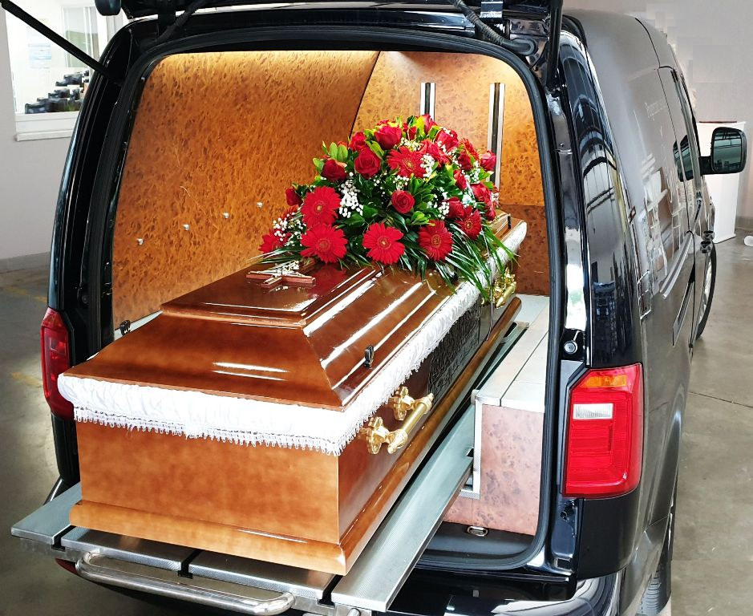

Smrt na odmoru u inostranstvu
Šta porodica radi kada turista premine na letovanju: konzulat, putno osiguranje, obdukcija, dokumenta i prevoz kući.
Korisni vodiči, saveti i informacije o prevozu pokojnika iz inostranstva. Saznajte sve što treba znati o međunarodnom transportu pokojnika.
Šta porodica radi kada turista premine na letovanju: konzulat, putno osiguranje, obdukcija, dokumenta i prevoz kući.

Kremacija u inostranstvu i prenos urne preko granice: sprovodnica, potvrda o kremaciji, prevoz kolima ili avionom.

Ko ima pravo na naknadu pogrebnih troškova, koja dokumenta trebaju i šta važi kada je smrt nastupila u inostranstvu.
Šta je sprovodnica, ko je izdaje, koja su dokumenta potrebna i kako se dobija za Srbiju, BiH i urnu.
Detaljan vodič kroz ceo proces organizacije prevoza pokojnika iz inostranstva. Saznajte korak po korak šta je potrebno uraditi.
Sve o cenama prevoza pokojnika iz Nemačke. Šta utiče na cenu, kako se formira i šta je sve uključeno u cenu transporta.

Kompletan spisak dokumentacije potrebne za prevoz pokojnika iz inostranstva. Saznajte koje dokumente treba pripremiti.
Detaljan vodič kroz proces prevoza pokojnika iz Austrije. Sve što treba znati o transportu iz Beča, Graca, Linca i drugih gradova.
Sve o hitnom prevozu pokojnika. Kada je potreban hitan transport, kako se organizuje i šta je važno znati u hitnim situacijama.
Sve o ekshumaciji i prenosu umrle osobe. Pravni aspekti, dokumentacija i proces ekshumacije pokojnika.
Poređenje prevoza pokojnika avionom i kombijem. Prednosti i mane oba načina transporta, cene i kada se koji koristi.
Saveti za izbor pogrebnog preduzeća. Na šta obratiti pažnju, koja pitanja postaviti i kako izabrati pravo preduzeće za prevoz pokojnika.
Kompletan vodič o prevozu pokojnika iz Švajcarske. Specifičnosti transporta iz Ciriha, Ženeve i drugih gradova.
Pravni aspekti repatrijacije pokojnika. Zakonski okvir, dokumentacija i sve što treba znati o legalnom prenosu pokojnika.
Vodič sa prvim koracima, dokumentacijom i organizacijom prevoza u domovinu.
Kompletan vodič za prevoz iz Rima, Milana i drugih italijanskih gradova.
Kontaktirajte nas danas - dostupni smo 24/7 za hitne slučajeve
Pozovite nas Pošaljite upit